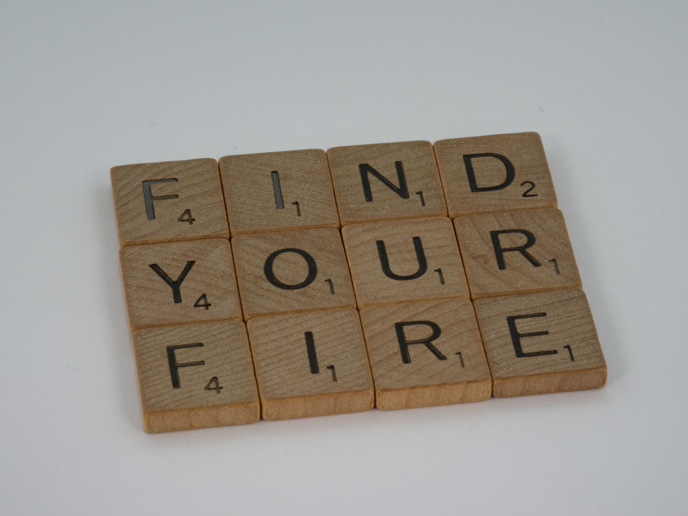

À propos de moi
Je suis Anabelle Josée Kouamé et j'ai obtenu une licence en économie. Aujourd'hui, je me lance dans une reconversion en développement web, une passion qui est devenue une véritable ambition.
J'ai toujours été fascinée par le tourisme et le potentiel qu'il représente pour mon pays. Mon objectif est donc d'acquérir les compétences nécessaires pour concevoir des sites web dédiés au tourisme, qui mettront en valeur les richesses culturelles et naturelles de mon pays.
Pour apprendre le développement web, je me forme activement sur des plateformes comme FreeCodeCamp et YouTube, où j'explore les bases du HTML, CSS et JavaScript. Mais au-delà de la théorie, je cherche à pratiquer davantage.
Passions
- La lecture
Depuis toujours, j'aime la lecture, que ce soit des romans, des articles ou des contenus spécialisés. Lire me permet d'apprendre, de m'inspirer et d'explorer de nouvelles idées.
- Le tourisme et la découverte du web
j'aime parcourir différents sites web dédiés aux voyages, aux découvertes culturelles et aux destinations à travers le monde. J'observe leur design, leurs fonctionnalités et la manière dont ils mettent en avant les lieux et les expériences. Cela me donne des idées pour créer à mon tour des plateformes modernes et attrayantes dédiées au tourisme dans mon pays.
- Le développement web et la technologie
Au fil du temps, j'ai développé un intérêt pour le numérique et le développement web. Ce qui me fascine c'est le fait créer quelque chose de zéro de voir un site prendre forme avec quelque des lignes de code.
Contact
- Téléphone : 01 40 93 68 74
- Email : anabellekouame49@gmail.com